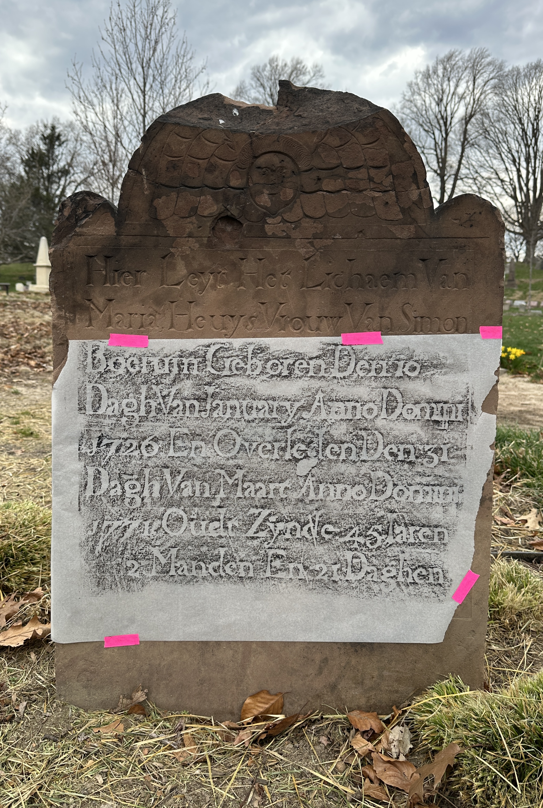

← MonuType.
About MonuType.
MonuType. was born out of my passion for typography and my comfortable curiosity with cemeteries. Having lived a short walk from Brooklyn's Green-Wood Cemetery for over twenty years, I have spent many hours taking in its sights and simultaneously developing my interest in graphic design and typesetting. Though an unconventional setting for this kind of study, cemeteries are rife with beautiful design. Each individual monument encapsulates the tastes of its time and, of course, the person it immortalizes.
The project consists of three revival typefaces extracted from three monuments– Cooper, Heuys, and Whistler– named after the memorialized people. I chose them to represent a range in terms of typographic style, but also based on the historical figures. Peter Cooper was a politician, inventor, philanthropist, and monumental contributor to the arts and arts education in New York City with his foundation of the Cooper Union. Maria Heuys was not herself a politician, but her husband Simon Boerum represented New York state in two Continental Congresses and was a longstanding figure in New Amsterdam politics. The couple were buried in the New Lots Dutch Burial Ground and relocated to Green-Wood.
George Washington Whistler was a civil engineer and inventor who built railroads and steam engines in the United States and abroad. He died seven years into the construction of the Saint Petersburg-Moscow Railway. He was also the father of James McNeill Whistler, the renowned American painter.
Each typeface was rendered from rubbings and photographs of the monuments they came from. To achieve basic latin character sets for each, any glyphs that could not be found on the monuments were replaced with complimentary typefaces that emphasize the difference between the fonts rather than try to disguise it. This is to honor the craftsmanship of the original engravers and to remain faithful to the words that they carved.
